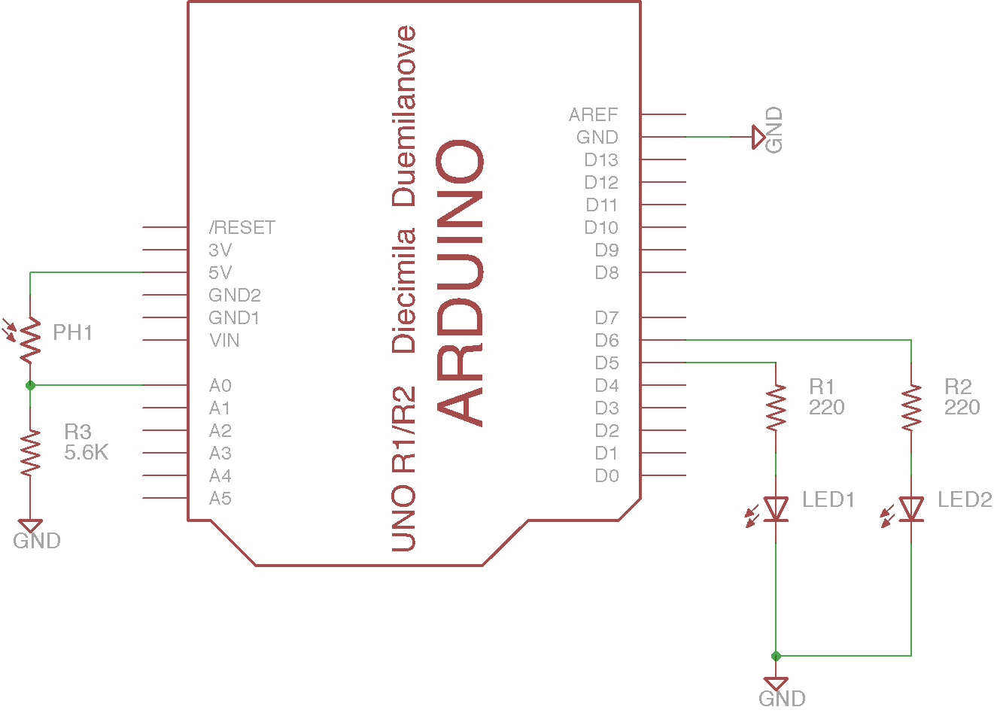

Exercise: Sensor Driven LED
Objective
Read a sensor input and control several external LEDs.
A microcontroller isn’t very useful without some kind of hardware attached.
This exercise combines connecting a photosensor and external LED outputs via a
control program.
Steps and observations
- Wire up the circuit on the breadboard. The photograph below shows a
suggested layout.
- Load and run the SensorFade sketch.
- Observe the initial blink pattern to make sure both LEDs can light. If one
doesn’t light, try reversing the LED polarity or checking your wiring.
- Observe the LED illumination after the blink pattern. Does varying the level
of light on the photocell fully cross-fade between the two LEDs?
- Measure the voltage on A0 over the available range of photocell illumination.
Adjust the values of VLOW and VHIGH in the code to this voltage range and
re-load the code.
- Try disconnecting A0 so it is floating and see what happens when you
connect your finger to it using just a jumper wire. The input is
high-impedance so even very tiny skin currents can change the voltage on the
input.
Comments
This example uses a number of programming features:
- infinite loops
- calibrating and scaling analog inputs
- pulse-width modulation of outputs
- use of map() and constrain()
For a challenge, see if you figure out what controls the rate and pattern of the
blinking of the onboard LED. Can you produce an asymmetric pattern?

Other Files
- SensorFade.ino
- sensor-fade.sch